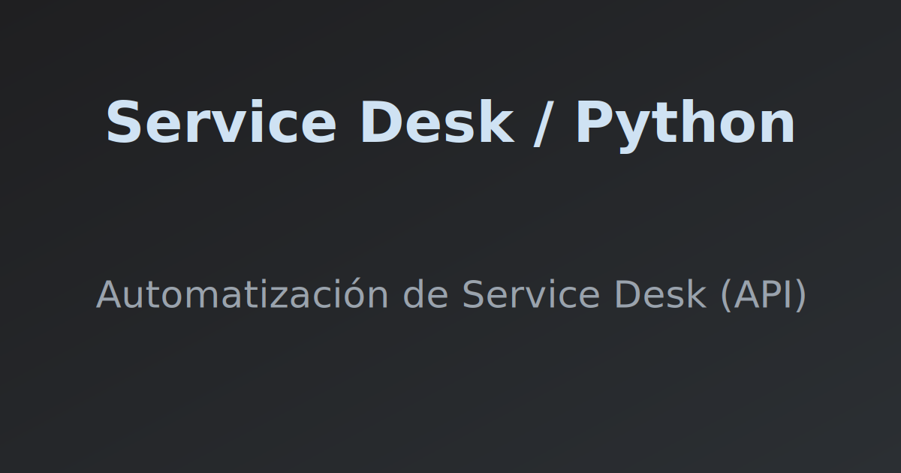

P1: Automatización de Ticketing (Python/API)
Solución Python (standalone) con interfaz Tkinter para estandarizar la creación de tickets de soporte en sistemas de Service Desk. Incluye integración API REST para carga dinámica de metadatos y lógica de subtareas.